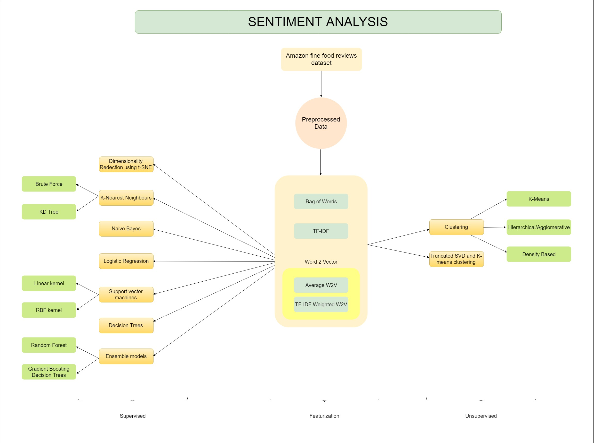

# Amazon Fine Food Reviews Analysis
Data Source: https://www.kaggle.com/snap/amazon-fine-food-reviews
EDA: https://nycdatascience.com/blog/student-works/amazon-fine-foods-visualization/
The Amazon Fine Food Reviews dataset consists of reviews of fine foods from Amazon.
Number of reviews: 568,454
Number of users: 256,059
Number of products: 74,258
Timespan: Oct 1999 - Oct 2012
Number of Attributes/Columns in data: 10
Attribute Information:
1. Id
2. ProductId - unique identifier for the product
3. UserId - unqiue identifier for the user
4. ProfileName
5. HelpfulnessNumerator - number of users who found the review helpful
6. HelpfulnessDenominator - number of users who indicated whether they found the review helpful or not
7. Score - rating between 1 and 5
8. Time - timestamp for the review
9. Summary - brief summary of the review
10. Text - text of the review
#### Objective:
Given a review, determine whether the review is positive (rating of 4 or 5) or negative (rating of 1 or 2).
[Q] How to determine if a review is positive or negative?
[Ans] We could use Score/Rating. A rating of 4 or 5 can be cosnidered as a positive review. A rating of 1 or 2 can be considered as negative one. A review of rating 3 is considered nuetral and such reviews are ignored from our analysis. This is an approximate and proxy way of determining the polarity (positivity/negativity) of a review.
### Hence, the following machine learning techniques are applied to this data set to achieve the above objective:
1. [t-SNE(t distribution stochastic neighbourhood embedding)](https://nbviewer.jupyter.org/github/chauhanakash23/Sentiment-analysis-Polarity-of-review-text/blob/master/t-SNE.ipynb)
2. [k-Nearest Neighbours](https://nbviewer.jupyter.org/github/chauhanakash23/Sentiment-analysis-Polarity-of-review-text/blob/master/KNearestNeighburs.ipynb)
3. [Naive Bayes](https://nbviewer.jupyter.org/github/chauhanakash23/Sentiment-analysis-Polarity-of-review-text/blob/master/Naive-Bayes.ipynb)
4. [Logistic regression](https://nbviewer.jupyter.org/github/chauhanakash23/Sentiment-analysis-Polarity-of-review-text/blob/master/Logistic-Regression.ipynb)
5. [Support Vector Classification](https://nbviewer.jupyter.org/github/chauhanakash23/Sentiment-analysis-Polarity-of-review-text/blob/master/Support%20Vector%20Classification.ipynb)
6. [Decision trees](https://nbviewer.jupyter.org/github/chauhanakash23/Sentiment-analysis-Polarity-of-review-text/blob/master/Decision-Trees.ipynb)
7. [Ensemble models(Bagging-Random Forest and Boosting-Gradient Boosting Decision Trees)](https://nbviewer.jupyter.org/github/chauhanakash23/Sentiment-analysis-Polarity-of-review-text/blob/master/Bagging%28Random%20Forest%29-Boosting%28Gradient%20Boosting%20Decision%20Trees%29.ipynb)
8. [Clustering(k-means, hierarchical, density based)](https://nbviewer.jupyter.org/github/chauhanakash23/Sentiment-analysis-Polarity-of-review-text/blob/master/Clustering-k%20means-hierarchical-DBSCAN.ipynb)
9. [Truncated Singular Vector Decomposition om co-occurance matrix generated by the words in the review text.](https://nbviewer.jupyter.org/github/chauhanakash23/Sentiment-analysis-Polarity-of-review-text/blob/master/Truncated-SVD.ipynb)
The following image represents the work flow:
